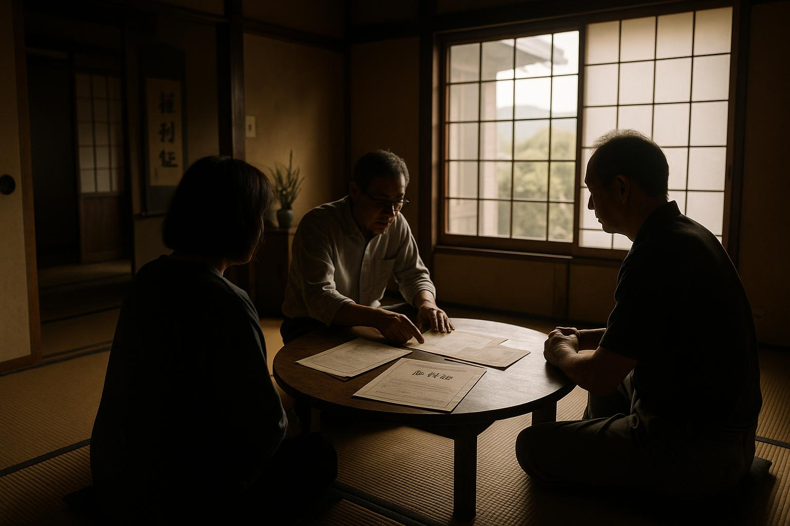

共有名義の空き家は、売却や活用の際に共有者全員の合意が必要になります
相続をきっかけに、実家が兄弟姉妹など複数人の共有名義になっているケースは珍しくありません。この記事では、共有名義の空き家で起こりやすいトラブルと、その防ぎ方・解消方法を解説します。
「名義を確認したら、自分だけでなく兄弟の名前も入っていた」というご相談は、TAMARIEにも多く寄せられます。共有名義の空き家は、単独名義の場合と比べて売却や活用の手続きが複雑になりがちです。
なぜ空き家が共有名義になるのか
親が亡くなった際、遺産分割協議で不動産の帰属を決めないまま法定相続分どおりに登記、あるいは未登記のまま放置すると、相続人全員の共有名義になります。「とりあえず全員で持っておこう」という判断が、後々の管理や売却の場面で足かせになることがあります。
共有名義でできること・できないこと
共有不動産に対する行為は、内容によって必要な同意の範囲が異なります。
| 行為の種類 | 内容の例 | 必要な同意 |
|---|---|---|
| 保存行為 | 修繕、不法占拠者への明け渡し請求など | 単独でも可能 |
| 管理行為 | 賃貸借契約の締結・解除など | 持分価格の過半数の同意 |
| 処分行為 | 売却、大規模なリフォーム、解体など | 共有者全員の同意 |
空き家を売却したり解体したりする場合は、共有者全員の同意が必要になります。一人でも反対する共有者がいると、話が進まなくなってしまう点が大きな特徴です。
共有名義の空き家でよくあるトラブル
- 共有者の一人が単独で居住し、他の共有者に使用料を払っていない
- 共有者の一人と連絡が取れない、所在が分からない
- 売却したい人と保有し続けたい人の意見が分かれる
- 固定資産税を誰がいくら負担するか揉める
- 共有者の一人が亡くなり、さらに相続人が増えて権利関係が複雑化する
トラブルを防ぐ・解消するための方法
話し合いで解決しない場合、いくつかの法的な手段があります。自分の持分だけを売却する方法や、裁判所に共有物分割請求を申し立てて、売却代金を分配する（換価分割）方法などが選択肢になります。共有者の一人と連絡が取れない場合の手続きも整備されつつありますが、個別の事情によって進め方が異なるため、司法書士や弁護士など専門家への相談をおすすめします。
共有名義の空き家を売却する際のポイント
共有者全員の合意が得られる場合は、通常の売却と同様に進められます。一方、意見がまとまらない場合は、自分の持分のみを不動産会社や専門の買取業者に売却するという方法もあります。持分だけの売却は買主が限られ価格が下がりやすい傾向があるため、まずは共有者間での話し合いを試みることをおすすめします。